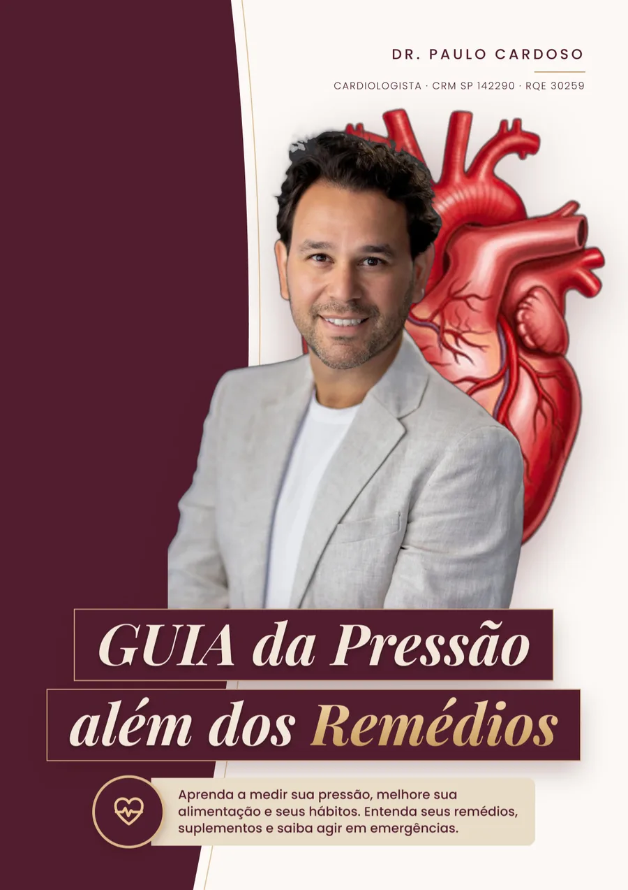
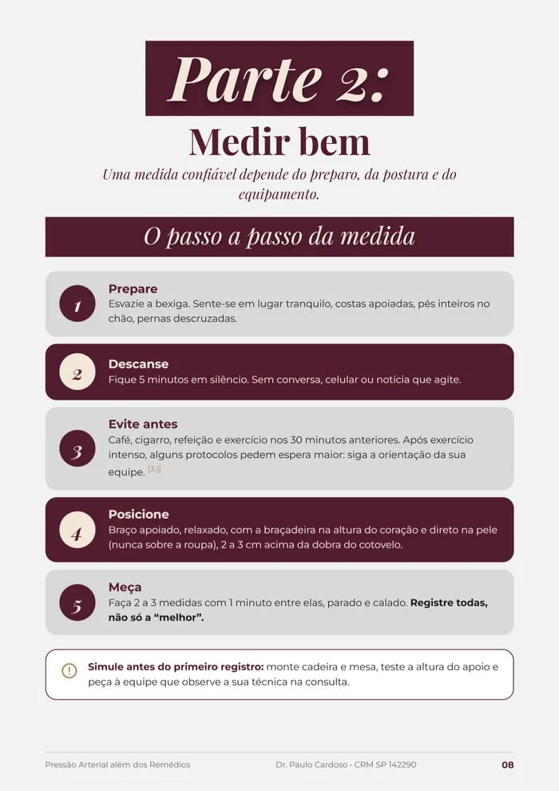
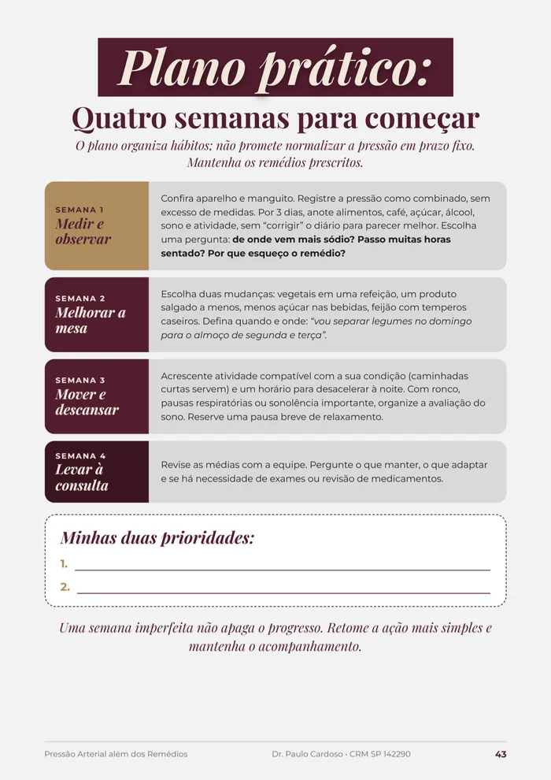
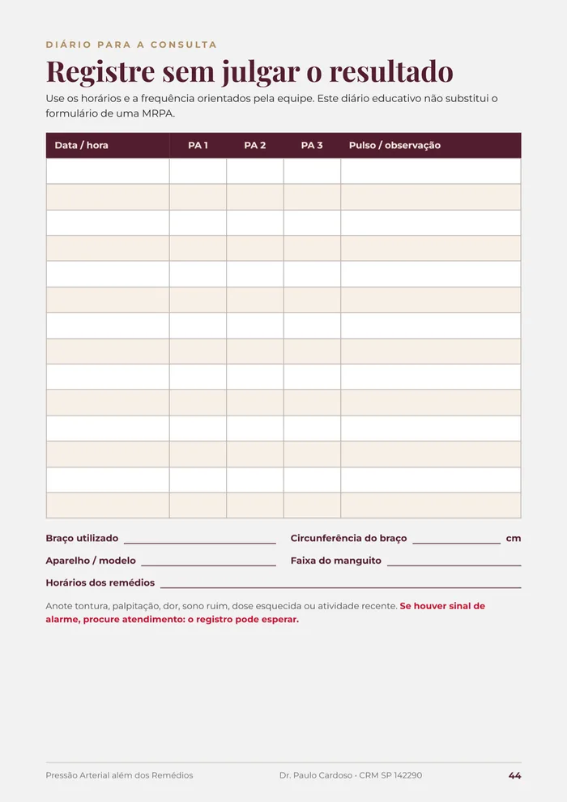
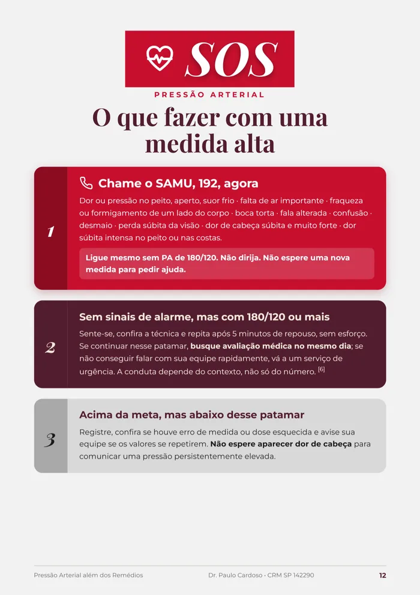

Medir certo
O passo a passo de 5 etapas e o tamanho certo do manguito. Num estudo publicado em 2023, o manguito pequeno demais elevou a máxima em cerca de 19,5 mmHg. É a primeira coisa que você ajusta — já no primeiro dia.
O que mudar no prato, no sono e na rotina para ajudar a baixar seus números — num plano de 4 semanas, junto com o seu tratamento e sem dieta de revista.
Quero o guia agoraAcesso imediato no seu e-mail · Garantia de 7 dias

Talvez você já tenha vivido isso
Você mede de novo. Dá outro número. Fica na dúvida se corre para o pronto-socorro ou se espera passar.
Você toma o remédio certinho. Tirou o sal. Mesmo assim, os números não descem do jeito que deveriam.
E ninguém te explicou o que mais dá para fazer — além de aumentar a dose.
Alguma dessas frases já passou pela sua cabeça?
“Se não sinto nada, minha pressão está boa.”
“Cada vez que meço dá um número diferente.”
“Já tirei o sal e não baixou.”
“Meu médico só aumenta a dose.”
“Medi, estava normal, hoje não tomei.”
“Será que chá de hibisco resolve?”
“Não sei nem o que posso comer.”
“Tenho medo de ter um AVC como meu pai.”
Se você se reconheceu em pelo menos uma, este guia foi escrito para você.
Como o guia funciona
O passo a passo de 5 etapas e o tamanho certo do manguito. Num estudo publicado em 2023, o manguito pequeno demais elevou a máxima em cerca de 19,5 mmHg. É a primeira coisa que você ajusta — já no primeiro dia.
As trocas que mais pesam, segundo as diretrizes: padrão alimentar, movimento, sono, peso, sódio escondido, álcool e estresse — adaptadas à comida brasileira.
Você preenche o diário e a ficha de tratamento e chega à consulta com números confiáveis. Qualquer ajuste de remédio é decidido junto com quem acompanha você.
O que você encontra dentro

Junto com o guia, você recebe

Uma mudança por vez, semana a semana. Você sabe exatamente o que fazer hoje.

Seus números organizados para o médico ver em segundos — e ajustar o tratamento com base em dados reais.

O que fazer com uma medida alta: quando ligar 192, quando buscar avaliação no mesmo dia e quando só registrar.
Como escolher aparelho e manguito, e as perguntas certas para tirar o máximo da sua próxima consulta.
Tudo o que você recebe hoje
Menos do que você gasta numa ida à farmácia.
Acesso completo por
R$67
à vista ou parcelado no cartão
Quero o meu guia agoraPagamento seguro · Pix ou cartão · Acesso imediato
Você conclui a compra por Pix ou cartão.
O acesso chega no seu e-mail em poucos minutos.
Você lê no celular ou imprime. É seu para sempre.
Leia o guia, aplique o primeiro passo. Se achar que não valeu, peça o reembolso em até 7 dias e você recebe 100% do valor de volta. Sem perguntas.
Me responda somente a verdade
Pressão alta não costuma doer. Por isso é tão fácil deixar para depois.
O remédio faz a parte dele. O que você faz nas outras 23 horas do dia também conta — e agora você pode saber exatamente o quê.
“Ele sabe ouvir, faz as perguntas certas no momento certo e passa muita tranquilidade e calma nas palavras.”
Wellison L. D. · paciente
“Escutou com paciência e atenção minhas queixas, foi claro nas explicações e me deixou seguro quanto às possibilidades de tratamento.”
João Felipe S. · paciente
“O dr. Paulo é uma pessoa muito agradável, e que explica tudo de maneira detalhada.”
Suely M. G. · paciente
Avaliações públicas das consultas com o Dr. Paulo no Google.
O guia não substitui o tratamento — ele trabalha junto com ele. Qualquer redução de dose é uma decisão tomada com o seu médico, com base nos seus números.
Cada organismo responde de um jeito, por isso o guia não promete prazo fixo. O que ele traz são as mudanças com melhor evidência e um plano de 4 semanas para você aplicar.
Por e-mail, logo após a confirmação do pagamento. É um PDF que você lê no celular, no computador ou imprime.
Sim. O guia começa pelo básico: entender os números e medir do jeito certo.
Pode. Muita gente compra para cuidar da pressão do pai ou da mãe.
Você tem 7 dias de garantia. Peça o reembolso e recebe 100% do valor de volta.
Sim. O Dr. Paulo atende presencialmente em São José dos Campos e online, por teleconsulta. Fale com a equipe no WhatsApp.